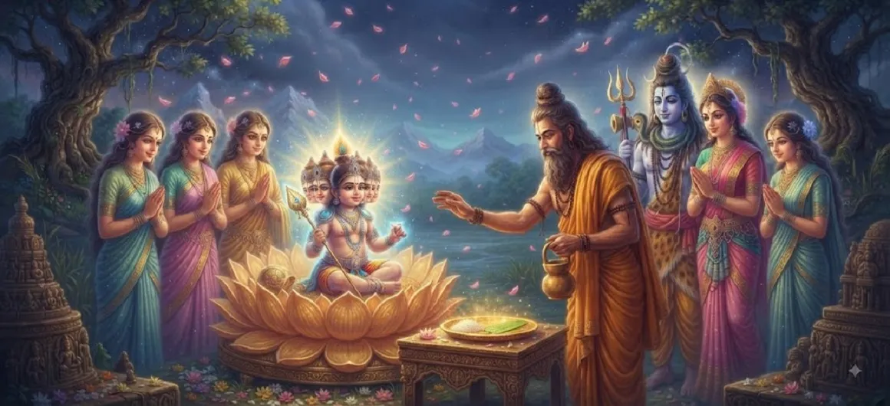

The Naming of Skanda
Chapter 15 of the Kumara Khanda narrates the sacred and joyous naming ceremony of the divine child, where assembled sages and deities officially bestow his legendary titles.
Through this formal recognition, the cosmic identity of the supreme general is firmly established across the three worlds, cementing his glorious destiny.
Chapter 15 Highlights
Sacred Ceremony
Gathering of celestial sages for the grand naming rites.
The Title of Skanda
Originating from Shiva's spilled seed of divine energy.
Karthikeya & Guha
Honoring his nursing mothers and his mysterious essence.
Kumara Status
Affirming his eternal youth and immaculate purity.
Celestial Rejoicing
Devas and rishis celebrating with chants and offerings.
Path to Childhood
Preparing the narrative for his wondrous upbringing.
Core Topics in This Chapter
- 01The Gathering of Devas and Sages→
- 02The Deep Meaning Behind the Name 'Skanda'→
- 03Conferring Karthikeya, Guha, and Kumara→
- 04Blessings Bestowed by Lord Brahma and Indra→
- 05The Great Rejoicing Across the Three Worlds→
- 06Foundation for His Growing Years→
- 07Transition to Chapter 16 (The Childhood of Kumāra)→
The Gathering of Devas and Sages
Following the miraculous appearance of his six-faced form in Saravana, the divine assembly of gods, led by Lord Brahma and Indra, along with great sages like Narada and the Saptarishis, arrives at the sacred site. Recognizing the child as the supreme savior destined to vanquish the demonic forces, they arrange a formal and glorious naming ceremony (Namakarana samskara) to honor him properly.
The Deep Meaning Behind the Name 'Skanda'
The sages formally confer the primary name **Skanda** upon the child. The term stems from the root 'skand', denoting that which has been oozed, dropped, or gathered together. Because his divine essence originated from the spilled seed of Lord Shiva—safeguarded by Agni and Ganga before settling in the reed grove—the name Skanda encapsulates his miraculous origin and indestructible power.
Conferring Karthikeya, Guha, and Kumara
In addition to Skanda, multiple resonant titles are bestowed. He is named **Karthikeya** to eternally honor the nurturing love of the six Krittikas who suckled him. He is called **Guha** (the hidden one) because his ultimate divine reality remains mysterious and deeply embedded within the cave of the heart. He is also honored as **Kumara**, signifying his eternal purity, untainted youth, and supreme spiritual vigor.
Blessings Bestowed by Lord Brahma and Indra
Lord Brahma bestows unmatched scriptural wisdom and spiritual authority upon the child, while Indra offers celestial weapons and robes fit for the commander-in-chief of the heavens. The convergence of these divine blessings endows the young Skanda with the absolute readiness to assume leadership over the celestial hosts in the impending battles against darkness.
The Great Rejoicing Across the Three Worlds
The conclusion of the naming ceremony triggers immense celebration across heaven, earth, and the nether regions. Celestial drums beat in rhythm, heavenly apsaras dance in jubilation, and showers of sweet-scented flowers descend from the skies. A profound sense of relief and optimism fills the cosmos, knowing that the ultimate protector has now been formally named and empowered.
Foundation for His Growing Years
With his identity anchored in these noble names, the stage is perfectly set for the unfolding of his growing years. The narrative transitions naturally from his wondrous birth and miraculous expansion to his active, playful, and powerful childhood activities under the care of his divine family and foster mothers.
Transition to Chapter 16 (The Childhood of Kumāra)
Having received his sacred titles in Chapter 15, the story moves seamlessly into Chapter 16, titled **The Childhood of Kumāra**, where his astonishing exploits, playful antics, and early displays of supreme strength are detailed.
The saga of Kumara continues to captivate seekers and devotees.
Key Teachings of Chapter 15
Power of Identity
Sacred names reflect inner divine qualities and destiny.
Honor to Caretakers
Acknowledging those who nurture and raise the noble.
Divine Empowerment
Blessings from elders equip one for righteous duty.
Eternal Youth
Kumara represents uncorrupted spirit and vitality.
Universal Harmony
Recognition of a savior brings peace to all realms.
Progressive Saga
Each chapter deepens our bond with scriptural lore.
Spiritual Reflection
The naming of Skanda teaches us that names carry potent spiritual frequencies and responsibilities. By bestowing titles like Karthikeya, Guha, and Kumara, the sages anchored the child's boundless energy into a focused purpose of protection, purity, and righteousness.
Living the Message of Chapter 15
Value and express deep gratitude toward your teachers, parents, and nurturers.
Maintain inner purity (Kumara-bhava) in your thoughts, words, and actions.
Understand your life's higher calling and step into your duties with confidence.
Key Spiritual Concepts
The sacred formal naming ceremony of the divine infant.
The principle honoring maternal nursing and devotion.
The hidden, mysterious inner reality of the Supreme.
The eternal purity and vigor represented by youth.
Divine empowerment bestowed by Brahma and Indra.
The grand celebration echoing across the three worlds.
Chapter Summary
Kumara Khanda Chapter 15 details the sacred naming ceremony where Lord Brahma, Indra, and the sages officially confer the illustrious names Skanda, Karthikeya, Guha, and Kumara upon the divine child, setting the stage for his wondrous childhood adventures.
Frequently Asked Questions
1. What is the primary focus of Kumara Khanda Chapter 15?
Chapter 15 focuses on the formal naming ceremony of the divine child, where great sages and deities confer titles such as Skanda, Karthikeya, and Kumara.
2. Why was the child named Skanda?
He was named Skanda because he originated from the spilled seed (Skanda) of Lord Shiva, preserved through Agni and Ganga into the sacred reed forest.
3. What other significant names are bestowed in this chapter?
He receives names like Karthikeya (reared by the Krittikas), Shanmukha (six-faced), Guha (the hidden one), and Kumara (the eternal youth).
4. What is the next chapter after Chapter 15?
The next chapter is titled 'The Childhood of Kumāra'.
“Adorned with noble names and divine blessings, the child stepped forth into the universe as the embodiment of supreme strength and eternal grace.”
Continue Through Kumara Khanda
Chapter 15 highlights the sacred naming of Skanda. Continue to the next chapter, The Childhood of Kumāra.